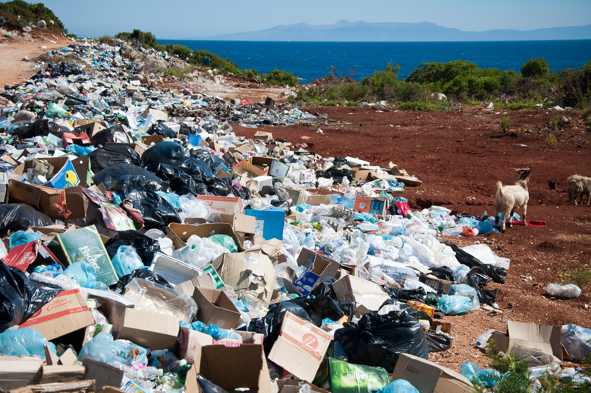
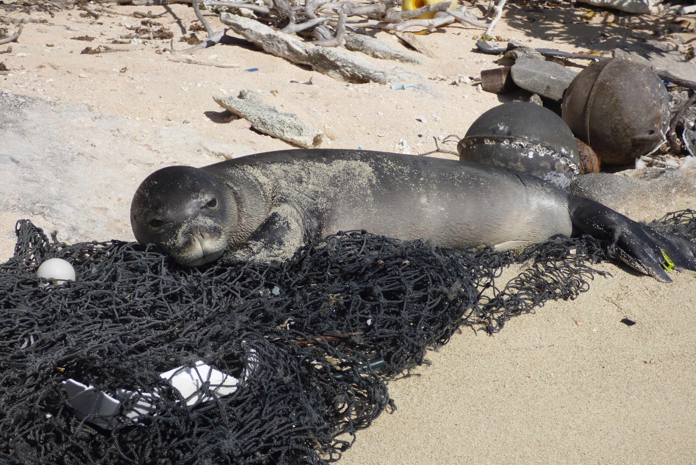

환경오염 실태
쓰레기는 그 자체로 지구환경과 생태계를 위협하는 오염원입니다




"일회용 비닐봉지, 플라스틱 병, 음식 용기, 음식 포장재 등 플라스틱 제품 네 가지가 인간이 만든 쓰레기가 거의 절반을 차지한다."
- Nature. 'Nature Sustainability'. 2021. 06.
"인간이 배출하는 도시 고형폐기물만 연간 20억t이 넘는다."
- World Bank. 'What a Waste 2.0'. 2018.
이중 46%는 매립되거나 야적장에 쌓이며 11%는 소각장에서 태워지고 제품이나 퇴비(비료)등으로 재활용되는 쓰레기는 전체의 16%뿐입니다.
따라서 우리는 올바른 분리배출을 통해 재활용률을 높여야 합니다.
출처 : 한겨레21